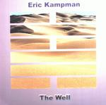

| Artist: | Eric Kampman |
| Title: | The Well |
| Label: | Big Balloon Music BBM601 |
| Length(s): | 54 minutes |
| Year(s) of release: | 2001? |
| Month of review: | [04/2002] |
| 1) | Intro | 1.15 |
| 2) | The Well | 9.43 |
| 3) | 1 To 0 | 5.50 |
| 4) | Green At Dusk | 3.15 |
| 5) | Smaug | 6.30 |
| 6) | Somewhere Between 7 & 8 Pt. II | 4.28 |
| 7) | Ostinato | 4.04 |
| 8) | Scaffolding | 5.57 |
| 9) | The Desert | 12.42 |
1 To 0 continues in the same languid careful style. What I find lacking here is a kind of groove, a liveliness. The music has its merits: good melodies, well composed, but comes out as sounding a bit too clinical. This is a problem with many beginning solo artists, they seem to lack a certain vibe. In fact I have heard bands who had this problem with their debut, but it is not something that cannot be overcome.
Green At Dusk is a pianic piece. As the other reviewer of these pages remarked, the vocals of Kampman are similar to those of Christopher Cross, a bit on the safe side hence. This song also has some vocal harmonies, which come off quite well, a bit in the style of Queen, but without overdoing it.
Isn't Smaug that dragon from the Hobbit? I seem to recall something of the kind. The music is a bit more up-beat here again. More up-beat also means the reintroduction of the rather lame drumming (or drum computer). In a way this song is quite similar to The Well. Again, the vocal melody is strong and memorable. The keyboard solo is a bit jazzy, the following interlude features military drums. The ending of the track has something of computer game music. I am not too happy with it.
Somewhere Between 7 & 8 Pt. II is a weird title. I assume Part I is also somewhere. The music is rather easy-going and percussive. A reference that pops here is a rather easy-going kind of Gentle Giant, also somewhat in the vocals. Kampman adds some nice orchestral, darker overtones here, and the result is somehow more fluent. Maybe it is simply the addition of more layers to the music that makes it come more to live, because the careful ending is again a bit too static.
Ostinato is a mysterious and slow moving track. It all reminds me a bit of Eddie Jobson's Theme Of Secrets and is really quite beautiful with a bit of church organ towards the end. Scaffolding is a piano piece with a definite nod in the direction of Procol Harum's Whiter Shade Of Pale (or wherever that was derived from). Vocally, the song is a bit more complex than others with plenty of backing lines and also quite a bit of vocoding going on. The music is quite intense because of the chosen keyboard sounds and the repetitive vocals. The bouncy verses and chorus are again blessed with some distinctive vocal melodies.
The final track is also the longest and the track that was present on the Progressive Ears collection. The vocal melody is again strong, somewhat airey and as a whole reminding me of Alan Parsons. What struck me particularly was the emotion shining through keyboard solo as present around the five minute mark. The vocals in the following passage are again quite toneless. Like The Well, the song also has a bouncy up-beat passage. This time it does not seem to fit in well with the other parts. Kampman should also take care not to try the same approach every time. At the end the music moves into an acoustic passage with a certain Tangerine Dream feel, because of the still present keyboards.